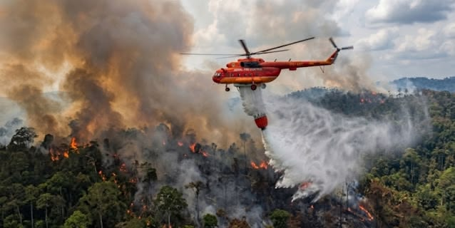
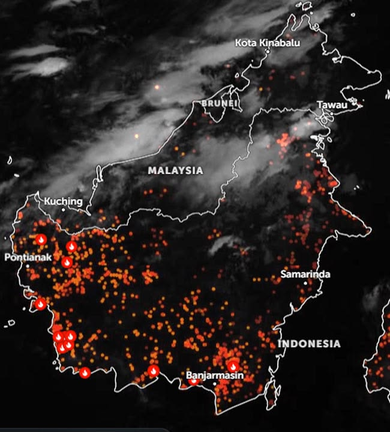
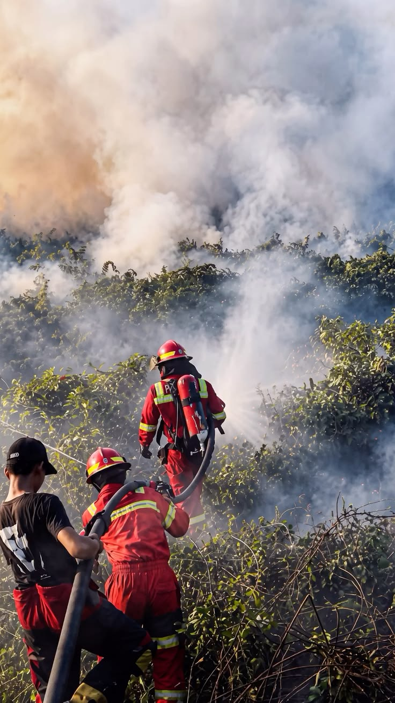
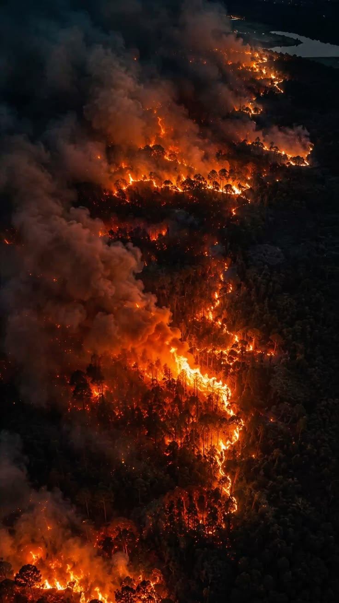
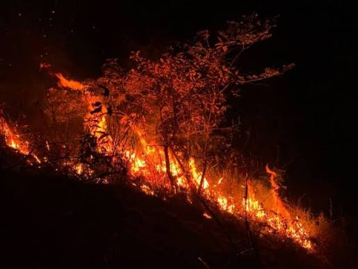
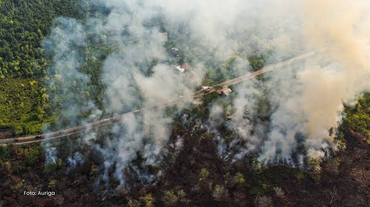
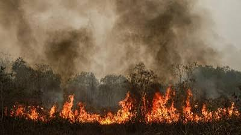

01 · PENYEBAB
Mengapa Karhutla terjadi?
Cuaca panas dan kondisi lahan yang kering dapat membuat api mudah menyebar. Selain itu, pembakaran lahan untuk membuka area baru juga dapat memicu kebakaran yang sulit dikendalikan.
RUANG ASPIRASI MASYARAKAT · INDONESIA
Kebakaran hutan dan lahan membuat udara kotor, merusak lingkungan, dan mengganggu kehidupan masyarakat.

Dengarkan aspirasi. Cari solusi. Lakukan tindakan.
GULIRKENAPA KITA
HARUS PEDULI
DAMPAK KEBAKARAN HUTAN
Masyarakat yang terkena dampak perlu didengar dan mendapatkan bantuan.
INFORMASI & EDUKASI · KARHUTLA
Kebakaran hutan dan lahan (Karhutla) adalah peristiwa terbakarnya kawasan hutan maupun lahan. Kebakaran dapat terjadi karena faktor alam, tetapi juga dapat disebabkan oleh kegiatan manusia, seperti pembukaan lahan dengan cara membakar.
01 · PENYEBAB
Cuaca panas dan kondisi lahan yang kering dapat membuat api mudah menyebar. Selain itu, pembakaran lahan untuk membuka area baru juga dapat memicu kebakaran yang sulit dikendalikan.
02 · DAMPAK
Asap kebakaran dapat menyebabkan gangguan pernapasan dan mengurangi jarak pandang. Kebakaran juga merusak hutan, mengganggu kehidupan satwa, serta membuat kegiatan sekolah, pekerjaan, dan aktivitas warga terganggu.
03 · PENCEGAHAN
Tidak membakar sampah atau membuka lahan dengan api, berhati-hati saat berada di kawasan hutan, ikut menjaga lingkungan, dan segera melaporkan tanda kebakaran kepada petugas merupakan langkah yang dapat dilakukan bersama.
SUARA MASYARAKAT
Pencegahan Karhutla bukan hanya tanggung jawab petugas. Pemerintah, perusahaan, dan masyarakat perlu bekerja sama. Kami mendorong pengawasan di wilayah rawan kebakaran, penanganan laporan warga dengan cepat, penegakan aturan terhadap pelaku pembakaran, serta bantuan bagi masyarakat yang terdampak.

DAMPAK KEBAKARAN HUTAN
Asap membuat udara kotor dan dapat mengganggu kesehatan warga.
Hewan kehilangan tempat tinggal dan banyak tumbuhan rusak.
Kegiatan bekerja dan mencari penghasilan warga dapat terganggu.
03 · ASPIRASI WARGA
Kebakaran hutan merusak pepohonan dan tempat tinggal hewan. Karena itu, hutan harus kita jaga bersama.
Jangan menunggu kebakaran terjadi. Mari menjaga hutan mulai dari sekarang.
Kami berharap pemerintah dan masyarakat melakukan tindakan nyata untuk mencegah kebakaran hutan.
04 · POSTER KARHUTLA





05 · KOMUNITAS BERTANDA
Poster ini berisi ajakan sederhana agar kita tidak membakar hutan dan ikut menjaga lingkungan.


CEGAH
KEBAKARAN

SR / 03JAGA · CEGAH · LAPORKAN
06 · MULAI SEKARANG